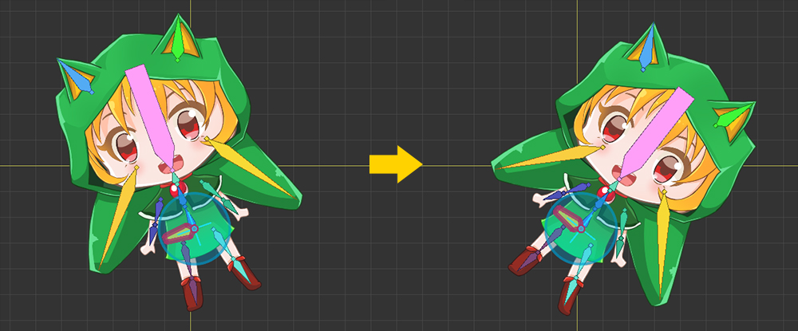
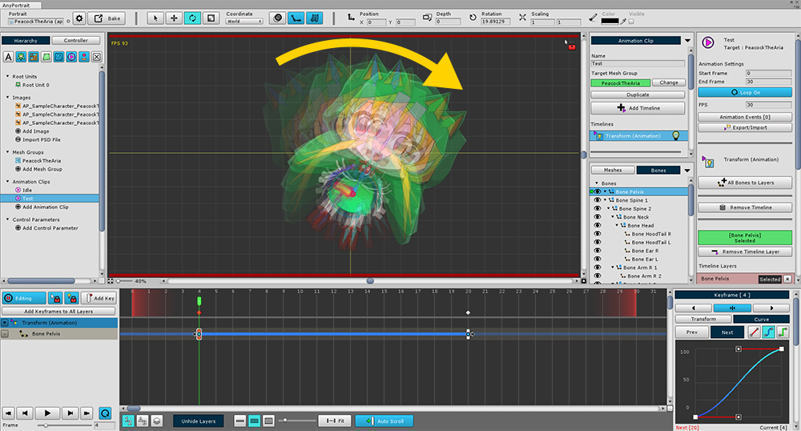
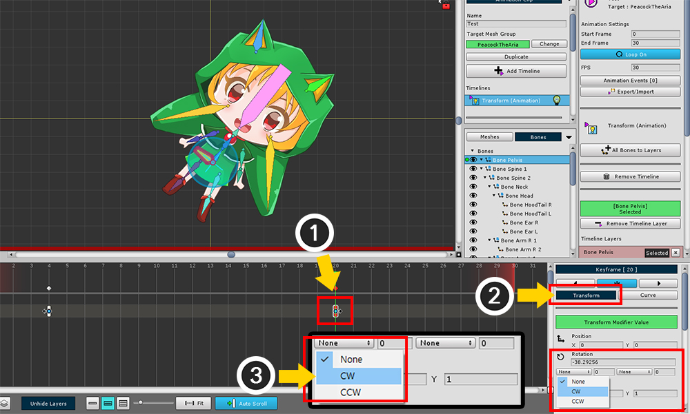
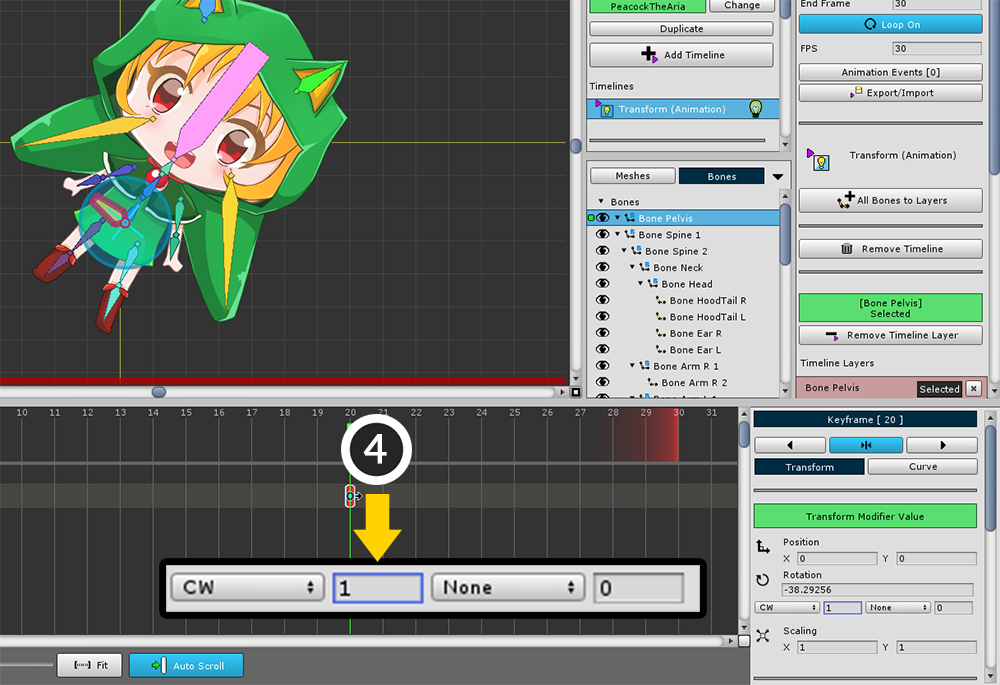

AnyPortrait > マニュアル > 360度以上に回転
360度以上に回転
1.0.0

キーフレームアニメーションを作成すると、オブジェクトを回転させることがよくあります。
回転するには、上の図のように2つのキーフレームを作成し、アニメートすることができます。
回転角度が360度以上のアニメーションを作成する場合は、通常の方法では不可能です。
これは、すべての角度が360度以内に定義されているためです。
このページでは、AnyPortraitが提供する360度以上の回転角度を補正する機能について説明します。

キーフレームアニメーションを再生すると、通常、上の図のように「2つの角度の間隔の小さな角度」に回転します。

(1) 2つのキーフレームの後にあるキーフレームを選択します。
(2) 「Trasform」タブをクリックすると、回転角度プロパティの下に 「None、Number」の入力フィールドがあります。
「前フレームの角度補正値」と「次フレームの角度補正値」とをそれぞれ表示する。
(3) 前フレームの「Angle」補正設定を「CW (時計回り)」に設定します。
(注 : フロントキーフレームを選択した場合、上記のように 「CCWを次のフレームに設定」することができます。)

次の数字の入力フィールドは、「回転数」を意味します。
(4) 回転数を1に入力してください。

回転するアニメーションを見ることができます。